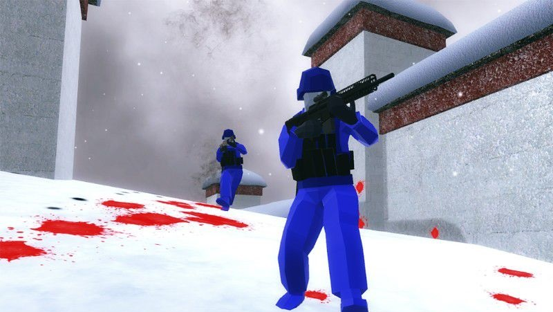

-
Noip历年试卷
- 这里我带来了历年的NOIP初赛c++版的试卷，欢迎下载~
- Noi Try it
-
Ithoughts

- iThoughts是一款用于绘制思维导图的软件,在这款软件中给我们的用户提供了多种图形的绘制方法 购买账户：www.dayanzai.me@xu.com 代码： FE23-1440-WED02-3671-97G9-7897
- Mind Try it
-
Ravenfield(战地模拟器)
- 《Ravenfield》是由SteelRaven7制作并发行的一款第一人称射击类游戏。在游戏中你需要扮演主角与敌人战斗，击败敌人后获得闯关分数，游戏中包含多个关卡。画风简洁，配置要求低。密码：3ra4
- Unity Try it
-
luogu.org(洛谷.org)

- 洛谷创办于2013年，出道名为“洛谷Online Judge”，致力于为oiers/acmers提供清爽、快捷的编程体验。它不仅仅是一个在线测题系统，它拥有强大的社区、在线学习功能。同时，许多教程内容都是由五湖四海的oiers提供的，保证了内容的广泛性。无论是初学oi的蒟蒻，还是久经沙场的神犇，均可从洛谷获益，也可以帮助他人，共同进步。
- Luogu Try it